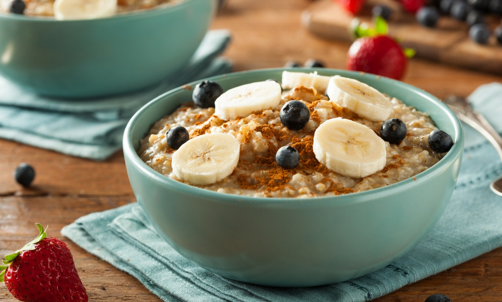

Avena con frutas y nueces
 DesayunoPreparación
- En una cacerola pequeña, vierte la leche y llévala a fuego medio hasta que comience a hervir.
- Agrega la avena y baja el fuego. Cocina durante 5-7 minutos, revolviendo constantemente hasta que la avena esté suave y haya absorbido la mayor parte de la leche.
- Retira del fuego y deja reposar la avena por 2 minutos.
- Mientras tanto, lava y corta las fresas en rodajas, y pica el plátano en trozos.
- Sirve la avena en un tazón grande y añade las frutas por encima.
- Espolvorea las nueces picadas y la canela.
- Finalmente, agrega la miel al gusto y sirve inmediatamente.